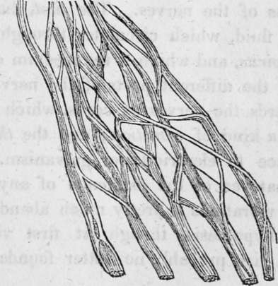

The Nerves And Their Functions. Part 3
Description
This section is from the book "Human Physiology For The Use Of Elementary Schools", by Charles Alfred Lee. Also available from Amazon: Human Physiology, for the Use of Elementary Schools.
The Nerves And Their Functions. Part 3
18. The influence of this order of nerves in the expression of the passions, is strikingly depicted in Sir Charles Bell's Treatise on the Nervous System. " In terror," he remarks, " we can readily conceive why a man stands with his eyes intently fixed on the object of his fears, the eye brows elevated, and the eye balls largely uncovered ; or, why with hesitating and bewildered steps, his eyes are rapidly and wildly in search of something. In this way we only perceive the intense application of his mind to the objects of his apprehension, and its direct influence on the outward organs. But when we observe him farther, there is a spasm in his breast; he cannot breathe freely ; the chest remains elevated, and his respiration is short and rapid; there is a gasping and convulsive motion of his lips, a tremor on his hollow cheeks, a gasping and catching of his throat; his heart knocks at his ribs, while yet there is no force in the circulation, the lips and cheeks being ashy pale."
19. " To those I address, it is unnecessary to go farther than to indicate that the nerves treated of in these papers are the instruments of expression, from the smile upon the infant's cheek to the last agony of life. It is when the strong man is subdued by this mysterious influence of soul on body, and when the passions may be truly said to tear the breast, that we have the most afflicting picture of human frailty, and the most unequivocal proof, that it is the order of functions we have been considering that is thus affected. In the first struggles of the infant to draw breath, in the man recovering from a state of suffocation, and in the agony of passion, when the breast labours from the influence at the heart, the same system of parts is affected, the same nerves, the same muscles, and the symptoms or characters have a strict resemblance."
20. Fourth Order. Regular Nerves
I have already stated that there are thirty pair of regular nerves which go out from the spine ; each nerve being composed of two kinds of fibres ; those of the anterior column being subsidiary to motion, and those from the posterior to sensation. With these, physiologists now class the fifth nerve. This large nerve divides into three principal branches ; the first going to the eye, is called opthalmic ; the second to the upper jaw, is called superior maxillary; and the third sent to the lower jaw, is named inferior maxillary. It is the third branch, however, which is truly a compound nerve, as its roots arise both from the anterior and posterior columns. The inferior maxillary branch, is a nerve of both sense and motion; its filaments of motion supply the muscles which shut the jaw, while those of sensation go to the tongue, salivary glands, gums, teeth of the lower jaw, external ear, cheek, chin, and lower lip. It is this nerve which gives sensibility to the face, and it is this which is the seat of that painful affection called tic dolouroux, which is sometimes removed by cutting the nerve affected. In the cat, the hare, and other animals with large whiskers, the filaments of this nerve can be traced to the bulbs of the hairs, which accounts for the delicate tact which these animals are endowed with, and by means of which they are enabled to wind their way in the dark, through intricate passages, with the greatest facility. The fifth nerve is associated with the organs of the senses of smell, sight, and hearing ; it exercises that of touch, is the immediate instrument of taste, and is affected in some degree by pungent odorous substances, by light, and by sound.
21. Spinal Nerves
The nerves of the spinal cord are all similar in their construction, and in the functions which they perform. The two sets of filaments of which they are composed, though enclosed in the same sheath, yet remain entirely distinct throughout their entire course. They go to every muscular fibre in the system, and spread out over the entire surface of the body, which possesses, accordingly, a more exquisite sensibility than the deep seated parts. Thus in amputating a limb, the chief pain is in cutting through the external parts ; for the bone may be sawn through, the muscles, tendons, and ligaments cut and lacerated, and even burnt with a red hot iron, and still the patient experiences little or no suffering.
22. The object of endowing the skin with such a high degree of sensibility, is, doubtless, to warn us to avoid, not only what is injurious to the skin itself, but also what might endanger internal parts. It thus serves as a protector to the whole body. The extremes of heat and cold, which might prove injurious, produce their painful impressions ; mechanical causes rouse by their sharpness, roughness, or hardness ; acrid and corrosive chemical agents induce uneasy sensation-all which serve to admonish us to shun the causes producing such effects. It is remarkable to notice how every part of the body is endowed with its own kind of sensibility. The skin feels changes of temperature ; the muscles experience only a sense of fatigue ; the eye is sensible only to light; the ear to sound ; the nose to odours ; the heart to blood ; the stomach to food, etc. ; and these sensations are sent along up to the brain by little threads, in close contact with other threads, which bring back the commands of the will! Truly may it be said, " man is fearfully and wonderfully made."
23. The spinal nerves are classed according to the portion of the spinal column from which they issue ; as the neck, back, loins, and pelvis ; forming eight cervical, twelve dorsal, five lumbar, and five sacral nerves ; all being connected with the sympathetic. The four lower cervical and first dorsal go to the arm pit, where they form a complicated plexus, from whence nerves issue to supply the arm and hand. The dorsal nerves supply the integuments of the body, the intercostal muscles, and those of the chest. The lumbar and sacral nerves supply the muscles of the loins and abdomen, together with the lower limbs.
24. Fifth Order.-Ganglionic Nerves
We have now considered, somewhat minutely, that portion of the nervous system which is called the cerebro spinal, embracing the brain, the material instrument of thought, the source and channels of voluntary motion, and of instinctive movements and sympathy. The ganglionic nerves are sometimes called great sympathetic, or the great intercostal; but sympathy has been shown to be chiefly independent of it, except so far as it receives filaments from the cerebro spinal nerves; and it is called great, not so much from its size, as from its supposed importance.
A plexus of nerves.
25. The ganglionic, or great sympathetic nerve, consists in a series or chain of ganglions, extending from the base of the cranium to the extremity of the sacrum. They are placed on the lateral part of the bodies of the vertebrae, and are united to each other by intermediate nervous cords, and send off continually filaments to all the adjacent organs. With the exception of the neck, there is a ganglion for each intervertebral space, both of the true vertebrae and sacrum. Besides these, there are other ganglia situated around the trunks of some of the large vessels of the abdomen. These ganglia are composed of a mixture of cineritious and medullary matter, and are supposed to be the centres of peculiar nervous power.
26. As to the functions of this order of nerves, there is good reason to believe that the peculiar vitality of every organ in the body directly depends on them. Most physiologists believe that they preside over the involuntary functions, as secretion, nutrition, absorption, calorification, etc. Others suppose that the office of the ganglions is to render the organs, which are supplied with nerves from them, independent of the will. As branches from them, accompany the blood vessels throughout their course, every part of the body must, to a certain extent, be under their influence.
27. There have been three hypotheses prevalent in respect to the functions of the nerves. The first, that the brain secretes a fine fluid, which circulates through the nerves, called animal spirits, and which is the medium of communication between the different parts of the nervous system ; the second regards the nerves as cords, which transmit all impressions by a kind of vibration; and the third ascribes nervous influence to electricity or galvanism. But there is no proof whatever of the existence of any such fluid ; the doctrine of vibrations is pretty much abandoned ; while the electrical hypothesis, though at first view perhaps more plausible, has probably no better foundation to rest upon.
Questions
How are the nerves classified ? What nerves consti tute the first order ? Why called nerves of specific sense ? Describe the first or olfactory. Is it large in animals?-in fishes?-in whales? -Describe the second, or optic. Do the fibres cross each other ?-its function ? Describe the auditory nerve. What nerves constitute the second order ? Where do they arise ? Describe the third pair ;-their function ? Describe the sixth pair ;-their function ?-The ninth pair ; -their function ? What compose the third order of nerves ? Describe the fourth nerve ;-its function ? Describe the seventh nerve ;-its function ? The fifth nerve ;-its function ;-distribution, etc. ? Describe the eighth pair of nerves. What are its three branches called ?" Describe the vagans ;-the recurrent;-the phrenic ;-the external respiratory ? What does Sir Charles Bell say of the influence of this order of nerves ? What compose the fourth order of nerves ? Why is the fifth nerve classed with the regular nerves ? Where does its first branch go ;-its second;-its third ? What nerve is affected in tic doloreaux ;-its function ? Describe the spinal nerves ;-their mode of origin ;-their distribution ? Why is the skin so sensible ? Has any part of the body its own sensibility ? Illustrate this. How are the spinal nerves classed ? What compose the fifth order ? What other names for the ganglionic nerves ? Describe them. What is the function of the ganglionic nerves ? What hypotheses have prevailed in relation to the functions of the nerves ?
Continue to:
- prev: The Nerves And Their Functions. Part 2
- Table of Contents
- next: Chapter XIII. The Five Senses.-Sense Of Touch
Tags
humans, anatomy, skeleton, bones, physiology, organs, nerves, brain